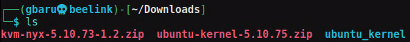
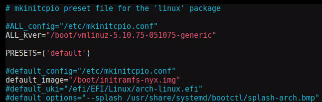

Since I am running my own Arch OS, but still need capabilities for fuzzing with nyx, I see myself booting an Ubuntu System from an external drive. I wanted to fix this, so my friend manolis looked into getting the kernel to run on my Arch system.
Since we don't want to risk destroying my working kernel, this kernel will be installed as a second option.
Ubuntu to Arch Kernel
Our way is to download any prebuilt nyx-kernel. For example, from msFuzz nyx-6.0.0 or from nyx-fuzz nyx-5.10.73.
We will go with the nyx-fuzz one for now. We downloaded the kernel and made a new dir ubuntu_kernel.

Now, we place the kernel and modules into our system.
cp ubuntu-kernel-5.10.75.zip ubuntu_kernel
cd ubuntu_kernel
unzip ubuntu-kernel-5.10.75.zip
mkdir kernel
cd kernel
ar x ../linux-image-unsigned-5.10.75-051075-generic_5.10.75-051075.202110201038_amd64.deb
tar -xvf data.tar.xz
sudo cp boot/vmlinuz-5.10.75-051075-generic /boot/
cd ..
mkdir modules
cd modules
ar x ../linux-modules-5.10.75-051075-generic_5.10.75-051075.202110201038_amd64.deb
sudo cp -r ./lib/modules/5.10.75-051075-generic /usr/lib/modules/
After that, we have the files in place, but we must create an initramfs. We can do so with mkinitfcpio. Let's make a new preset for nyx.
sudo cp /etc/mkinitcpio.d/linux.preset /etc/mkinitcpio.d/nyx.preset
Now edit to the new kernel

and finish up with this
sudo depmod 5.10.75-051075-generic
sudo mkinitcpio -p nyx --kernel 5.10.75-051075-generic
Now everything went smoothly for me. Some modules might be missing, but in general this works for me and makes it possible to run the nyx-fuzzers.